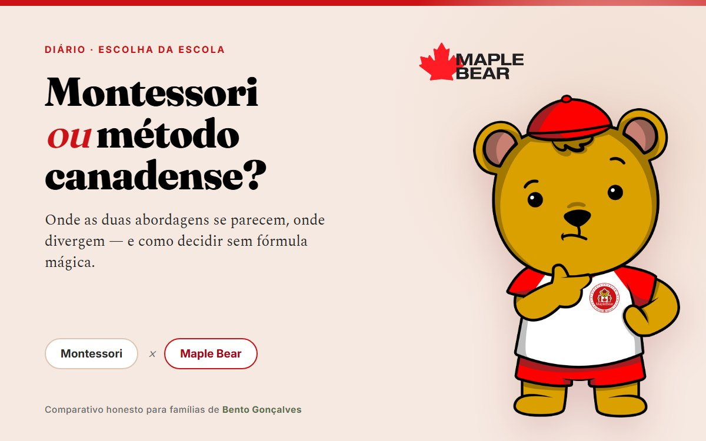

Métodos pedagógicos
Montessori vs Método Canadense em Bento Gonçalves: Comparativo Honesto

Toda família que pesquisa escola de educação infantil em Bento Gonçalves esbarra, mais cedo ou mais tarde, na mesma encruzilhada de palavras: Montessori, método canadense, bilíngue, Reggio, Waldorf. Este texto se concentra em duas dessas: o Montessori e o método canadense da Maple Bear. E começa com uma admissão que esse tipo de comparativo quase nunca faz: nós somos uma das partes comparadas. A Maple Bear segue o método canadense — então tratamos de explicar as duas abordagens com honestidade, mostrando onde cada uma é forte, em vez de fingir neutralidade que não temos.
A boa notícia é que a comparação não precisa ser uma briga. Montessori e método canadense são duas tradições pedagógicas sérias, com mais pontos em comum do que de divergência. A pergunta certa não é "qual é melhor", e sim "qual responde melhor aos princípios que a minha família valoriza". Vamos chegar lá com calma.
O Que É o Método Montessori, em Resumo
Criado pela médica e educadora italiana Maria Montessori no início do século XX, o método parte de uma ideia que a neurociência confirmaria depois: a criança pequena aprende explorando, não recebendo conteúdo pronto. O papel da escola é preparar o ambiente para que essa exploração aconteça com profundidade. Uma sala Montessori autêntica costuma ter:
- Ambiente preparado — mobiliário na altura da criança, materiais acessíveis, estética calma e ordenada.
- Materiais sensoriais estruturados — torre rosa, encaixes, letras de lixa; cada material isola uma habilidade e permite que a criança perceba o próprio erro sem correção externa.
- Livre escolha com limites — a criança escolhe a atividade e trabalha nela pelo tempo que precisar, dentro de um repertório curado pelo adulto.
- Professor como guia — observa, apresenta os materiais individualmente e interfere o mínimo necessário.
- Turmas multietárias — crianças de idades diferentes na mesma sala, com as maiores ajudando as menores.
É uma abordagem com mais de um século de prática, especialmente forte na construção de concentração, independência e cuidado com o ambiente.
O Que É o Método Canadense da Maple Bear, em Resumo
O método canadense Maple Bear nasce do sistema educacional do Canadá — referência mundial em educação básica — e chega ao Brasil alinhado à BNCC. Ele também coloca a criança no centro e também aprende pela experiência, mas o caminho é outro:
- Aprendizagem ativa por investigação e projetos — as crianças exploram perguntas reais, muitas vezes em pequenos grupos, e o professor é um mediador que provoca a curiosidade e documenta as descobertas.
- Ambiente organizado por centros de aprendizagem — cantos de leitura, faz de conta, arte, ciências, por onde a criança circula.
- Avaliação por evidências e portfólio — registros do desenvolvimento de cada criança, sem provas na primeira infância.
- Turmas organizadas por estágio — do Bear Care (a partir dos 18 meses) ao Senior Kindergarten, com o Year 1 do Ensino Fundamental a partir de 2027.
- Imersão em inglês integrada à rotina — parte do dia em inglês, parte em português, desde a primeira infância. Este é o traço que mais distingue a abordagem.
Se você quer aprofundar só esse lado, vale ler o guia da metodologia canadense Maple Bear em detalhe.
O Que as Famílias Realmente Buscam Por Trás do Rótulo
Atendendo famílias toda semana, percebemos que quem digita "Montessori" ou "escola canadense" no Google quase nunca está atrás de um rótulo. Está fugindo da imagem da "escolinha de conteúdo" — fileiras, folhinha xerocada, choro tratado como manha — e procurando o oposto:
- Uma escola onde a criança é protagonista, não plateia;
- Onde a autonomia se constrói na rotina — servir-se, guardar, escolher, tentar;
- Onde o ritmo individual é respeitado, sem comparação;
- Onde se aprende pela experiência, não pela repetição;
- Onde o ambiente é acolhedor e os adultos escutam.
Montessori × Método Canadense: Comparativo Honesto
Nenhuma das colunas abaixo é "a certa". A tabela existe para tornar a decisão consciente, não para declarar vencedor. Repare que a maior parte das linhas mostra convergência — a divergência real aparece em poucos pontos, sobretudo no idioma.
| Critério | Montessori | Método canadense (Maple Bear) |
|---|---|---|
| Visão da criança | Protagonista, capaz, ativa | Protagonista, capaz, ativa |
| Como se aprende | Materiais estruturados, trabalho individual | Investigação e projetos, muitas vezes em pequenos grupos |
| Papel do professor | Guia que observa e apresenta materiais | Mediador ativo que provoca perguntas e documenta descobertas |
| Ambiente | Preparado, na altura da criança | Preparado, organizado por centros de aprendizagem |
| Turmas | Multietárias | Por estágio (Bear Care aos 18 meses → Senior Kindergarten → Year 1 em 2027) |
| Avaliação | Observação individual | Evidências e portfólio, sem provas na primeira infância |
| Erro | Autocorreção pelo próprio material | Erro como parte da investigação, mediado pelo professor |
| Idioma | Depende da escola (em geral, monolíngue) | Imersão em inglês integrada à rotina, desde os 18 meses |
| Lastro institucional | Formação certificada dos guias (AMI/associações) | Rede global Maple Bear (30+ países), currículo canadense alinhado à BNCC |
Em uma frase: nos princípios as duas jogam no mesmo time; a diferença está no como (material individual × projeto coletivo) e, sobretudo, no idioma. O método canadense foi desenhado para que a criança viva em duas línguas na janela em que o cérebro adquire idiomas com mais facilidade — janela que explicamos no artigo sobre a idade certa para a escola bilíngue.
🍁 Quer ver os dois mundos — autonomia e duas línguas?
Visite a Maple Bear Bento Gonçalves num dia comum de aula e observe os centros de aprendizagem, a autonomia na rotina e a imersão em inglês ao vivo.
Agendar Visita GratuitaAs Trocas Que Cada Abordagem Exige
Toda escolha pedagógica tem um trade-off — algo que ela prioriza e algo a que dá menos peso. Ser honesto sobre isso ajuda mais do que listar só vantagens.
O que o Montessori prioriza (e o que pede em troca)
O Montessori clássico é imbatível na construção de concentração profunda e independência individual: a criança escolhe um material e mergulha nele pelo tempo que quiser. A troca é que ele tende a ser monolíngue e mais focado no trabalho individual do que na colaboração em grupo. Exige também guias com formação certificada — sem isso, a "sala Montessori" vira uma estante de brinquedos de madeira sem método por trás. E "Montessori" não é marca registrada: qualquer escola pode usar a palavra, então a verificação da formação é essencial.
O que o método canadense prioriza (e o que pede em troca)
O método canadense é forte no bilinguismo por imersão e na aprendizagem colaborativa por projetos, com lastro de uma rede internacional e alinhamento à BNCC. A troca é que ele trabalha menos com materiais autocorretivos individuais no estilo Montessori e mais com a dinâmica de grupo mediada pelo professor. Para famílias que sonham com a imagem específica da criança em silêncio diante da torre rosa, isso pode parecer "menos Montessori" — porque é mesmo. São filosofias diferentes de chegar à autonomia.
Como Decidir em Bento Gonçalves, na Prática
Em vez de escolher pelo folder, escolha visitando. Estas verificações servem para qualquer escola — montessoriana, canadense ou outra — e tornam a decisão muito mais clara:
- Veja a rotina inteira, não a vitrine. O método vale no pátio, no almoço e no conflito entre crianças — não só na "hora do material" ou na "hora do inglês". Pergunte como os adultos agem quando uma criança chora ou se recusa a participar.
- Pergunte sobre a formação da equipe. No Montessori, peça por formação certificada (AMI/associações). No método canadense, pergunte como os professores são formados e acompanhados na metodologia Maple Bear.
- Peça o projeto pedagógico escrito. "Inspiração Montessori" ou "escola bilíngue" sem detalhamento costuma significar pouco. Veja como o método aparece no documento — currículo, rotina, avaliação.
- Observe as crianças, não só os adultos. Elas parecem à vontade, autônomas, escutadas? É o melhor termômetro de qualquer abordagem.
Para um roteiro de visita completo, veja também qual a melhor escola de educação infantil em Bento Gonçalves e o guia sobre como escolher uma escola bilíngue. Se Reggio ou Waldorf também estão na sua lista, temos comparativos honestos sobre Reggio Emilia e Waldorf.
Onde a Maple Bear Bento Gonçalves Se Posiciona
Com a transparência do início: não somos Montessori e não usamos o nome como isca. O que oferecemos às famílias que chegam por essa comparação é:
- Os princípios que importam: criança no centro, aprendizagem ativa, autonomia na rotina, ambiente preparado e avaliação por observação e portfólio — sem provas, sem fileiras.
- O diferencial que define a escolha: imersão em inglês integrada à rotina desde os 18 meses (programa Bear Care), no método canadense aplicado em mais de 30 países e alinhado à BNCC.
- Continuidade: da educação infantil ao Year 1 do Ensino Fundamental em 2027, no mesmo projeto.
- Verificável pessoalmente: na Alameda Fenavinho, 168. Visite num dia comum e aplique as quatro verificações acima aqui dentro.
Se a sua família concluir que o Montessori clássico é o caminho, ótimo — terão decidido por conhecimento, não por marketing. E se concluírem que querem os mesmos princípios somados ao bilinguismo, a Maple Bear quer ser a primeira visita do roteiro. O WhatsApp da escola é o (54) 99931-5480.
Perguntas Frequentes
Montessori ou método canadense: qual é melhor para a educação infantil?
Não existe um "melhor" universal — existe o melhor para a sua família. As duas abordagens são sérias e colocam a criança no centro. O Montessori aposta em materiais estruturados de uso individual e no professor como guia observador; o método canadense da Maple Bear aposta em investigação e projetos em grupo, com o professor mediando perguntas, somando imersão em inglês desde os 18 meses. Se você valoriza concentração individual com materiais autocorretivos, o Montessori clássico tende a agradar; se valoriza bilinguismo por imersão e aprendizagem colaborativa por projetos, o método canadense responde melhor. O caminho honesto é definir seus princípios primeiro e visitar escolas dos dois tipos depois.
Existe escola Montessori e escola canadense em Bento Gonçalves?
Há escolas na região que se apresentam como montessorianas ou de inspiração Montessori, e há a Maple Bear Bento Gonçalves, na Alameda Fenavinho, 168, que segue o método canadense bilíngue. Antes de decidir, vale visitar as duas abordagens com um roteiro de perguntas em mãos: formação dos educadores, como é a rotina inteira (não só a "hora do material" ou a "hora do inglês") e como a escola lida com conflito, choro e ritmos diferentes. A decisão fica muito mais clara depois de ver cada proposta funcionando num dia comum de aula.
A Maple Bear é uma escola Montessori?
Não. A Maple Bear Bento Gonçalves segue a metodologia canadense Maple Bear, com aprendizagem ativa por investigação e imersão em inglês desde os 18 meses. Ela compartilha com o Montessori vários princípios que as famílias buscam — criança protagonista, autonomia na rotina, ambiente preparado e respeito ao ritmo —, mas chega a eles por outro caminho (projetos em grupo em vez de materiais individuais) e acrescenta o bilinguismo por imersão, que o Montessori clássico não prevê.
O método canadense atrapalha o português da criança?
Não. Na Maple Bear, o português acontece todos os dias e segue alinhado à BNCC — a imersão em inglês é integrada à rotina, não substitui a língua materna. A criança constrói as duas línguas em paralelo, com vocabulário real em cada uma, exatamente na fase em que o cérebro adquire idioma com mais naturalidade. Falamos disso no artigo sobre se a escola bilíngue confunde a criança.
Conclusão: Princípios Primeiro, Método Depois
"Montessori ou canadense?" é uma boa pergunta — mas esconde uma melhor: que princípios eu quero no dia a dia do meu filho, e o bilinguismo entra ou não nessa conta? Responda isso primeiro. Se a resposta for autonomia, respeito ao ritmo, mão na massa e acolhimento, você tem dois caminhos sérios na Serra Gaúcha. Se a resposta incluir viver em duas línguas desde cedo, o método canadense passa à frente — e é aí que a Maple Bear entra.
Visite, pergunte, observe a rotina de verdade. E quando quiser ver como esses princípios funcionam em duas línguas, a porta da Maple Bear Bento Gonçalves está aberta.
Quer conversar com a gente?
Deixe seu nome e WhatsApp — abrimos uma conversa direta com você sobre a Maple Bear Bento Gonçalves.
🔒 Não armazenamos nada. Abre direto no WhatsApp da escola.
Conheça a Maple Bear Bento Gonçalves.
Alameda Fenavinho, 168 · Bear Care ao Senior Kindergarten · Year 1 em 2027. Venha ver autonomia, investigação e imersão em inglês ao vivo.
📅 Agendar minha visita pelo WhatsAppVagas limitadas por turma · pré-matrícula 2027 (Year 1) aberta
Sua família está mais perto de Caxias do Sul? Conheça a Maple Bear Caxias do Sul — a mesma metodologia canadense, pertinho de você.
📖 No blog de Caxias do Sul: Escola Infantil Montessori em Caxias do Sul: O Que Avaliar Antes de Escolher